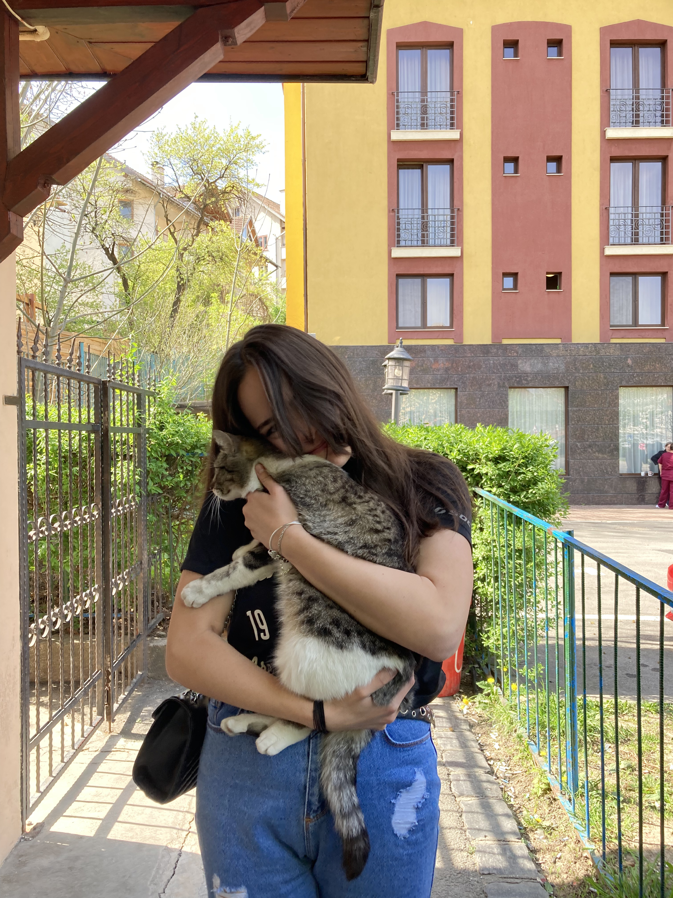

14 aprilie 2024
Chioșc
💜 Te iubesc pentru empatia ta care ma tine cald in cele mai reci zile 💜
Trăim într-o perioada foarte dificilă din punct de vedere emoțional. Avem ciudată impresie ca un caracter rece și lipsit de emoții aduce succes. De ce? Oamenii au
încetat sa mai fie oameni. Începem sa uitam de faptul ca ținem unii la ceilalți, de faptul ca suntem aici pentru a iubi și a fi iubiți. Sunt mai mult decât sigur
ca în societatea asta haotică aș fi devenit și eu o persoana rece. Sunt sigur ca m-aș fi pierdut. Insa datorită ție, Ioana, am rămas același suflet cald și
iubitor care a plecat din caldura de acasa. Îți mulțumesc ca nu m-ai lăsat să-mi pierd empatia, dar cel mai important ca nu m-ai lăsat sa ma pierd pe mine.